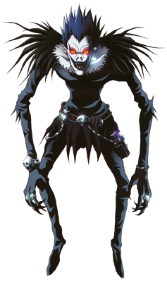

Au début de la série, Light Yagami est un lycéen de 17 ans, élève très travailleur
et surdoué obtenant les meilleurs résultats à l'école mais froid et solitaire. C'est un
utopiste, et lorsqu'il trouve par terre un Death Note et réalise son pouvoir, il décide
de s'en servir pour débarrasser le monde de tous les criminels. Il veut ainsi créer
un monde parfait, dont il serait le dieu. Il devient ainsi le premier Kira (Killer),
tuant par l'intermédiaire du Death Note des centaines de criminels, pour enfin devenir
le «Dieu» de son monde parfait.
L est considéré comme le plus grand détective du monde, et aide Interpol à résoudre
l'affaire Kira, dans laquelle il s'impliquera personnellement. Dans son enquête, L
suspecte hautement Light Yagami et son objectif est de prouver que Light est Kira.
Il est aussi doté d'une innnntelligence hors normes et utilise ses capacités
intellectuelles anonymement au service de la police.
Ryuk est un Shinigami, c'est-à-dire un « dieu de la Mort ». Dans le monde
des shinigami, il est entouré d'autres « dieux de la Mort » qui passent
davantage leur temps à jouer aux cartes qu'à tuer, comme ils le faisaient
dans le passé. Comme il s'ennuie, Ryuk, pour se distraire, décide de laisser
tomber l'un des deux « carnets de Mort » (Death Note) qu'il possède dans le
monde des Humains, qui le fascine. C’est Light Yagami qui tombera sur ce carnet,
ils entretiendront donc une relation « amicale » étrange car Ryuk est obligé
de rester auprès du détenteur du carnet jusqu’à sa mort. Seul ceux ayant touché
le Death Note peuvent apercevoir le Shinigami propriétaire du carnet. Ce
« carnet de Mort » est capable de tuer n'importe qui, si l'on écrit dans
celui-ci le nom d'une personne dont on connaît aussi le visage, ceci afin
d'éviter que ne soient tués des gens possédant les mêmes nom et prénom.

Misa est une mannequin d'une grande beauté et aussi une actrice très appréciée.
Misa ferait presque n'importe quoi pour Light. Sa priorité reste l'amour qu'elle
lui voue. Elle est bien moins intelligente que Light mais elle n'est pas stupide.
Light se sert de la dévotion que Misa lui porte pour profiter d'elle car lors de leur
première rencontre, Misa lui avait dit qu'elle acceptait d'être son instrument.
Misa fut sauvée par Jeras, un shinigami qui l'observait sans cesse depuis qu'il en était tombé amoureux, qui
a outrepassé ses droits pour éviter que Misa ne meure en tuant son agresseur avec son Death Note. Un dieu de
la mort n'ayant pas le droit de tuer pour rallonger la vie d'une personne qui lui est chère, il se
transforma en tas de cendre laissant son Death Note derrière lui. Rem, un autre shinigami ayant vu la scène,
décida de donner ce Death Note à Misa, ce qui fera d’elle la deuxième détentrice de Death Note (avec Light).
Rem apparaît pour la première fois dans le but de rencontrer Amane Misa, afin de lui donner
le death note du shinigami qui s'est sacrifié pour elle. Elle lui explique que pour tuer
un shinigami, il faut qu'il tombe amoureux. Rem devient donc après ça, le shinigami
lié au Death Note porté par Misa. Rem est une shinigami plutôt sérieuse et
intelligente. Elle est assez taciturne et n'apprécie pas les humains, sauf Misa.
Élevé à l'orphelinat Wammy's House (orphelinat créé dans le but de trouver le
successeur de L), Mello est très vite remarqué pour son incroyable potentiel intellectuel.
Le jour de la mort de L, Mello et Near, sont convoqués pour savoir lequel des deux
pourra le remplacer. À cause de son tempérament émotif, Mello cédera la place à Near
qui résout les énigmes avec sang-froid. Pris d’une grande déception, il décida de
lancer un défi à Near qui consiste à être le premier à capturer Kira. Mais il va vite se
rendre compte que leurs potentiels sont trop faibles séparément. Il va finalement prendre
l'initiative de collaborer avec Near afin de tenter de capturer l'assassin de L.
Enfant surdoué, Near a été élevé à la Wammy's House, un orphelinat dont le
seul but est de former le successeur de L, considéré comme le meilleur enquêteur
du monde. Il a beaucoup de manies qui font penser à L : L passait aussi son temps
à manger des gâteaux, Near tripote constamment une mèche de ses cheveux etils ont à
peu près la même manière étrange de s'asseoir.